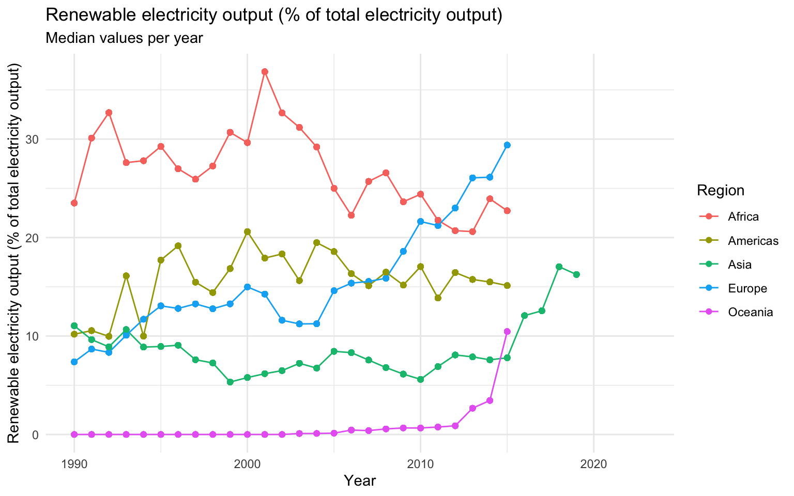
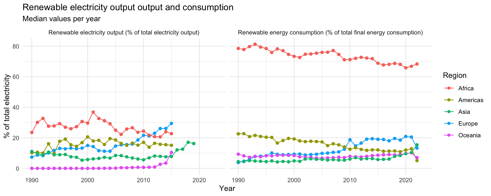
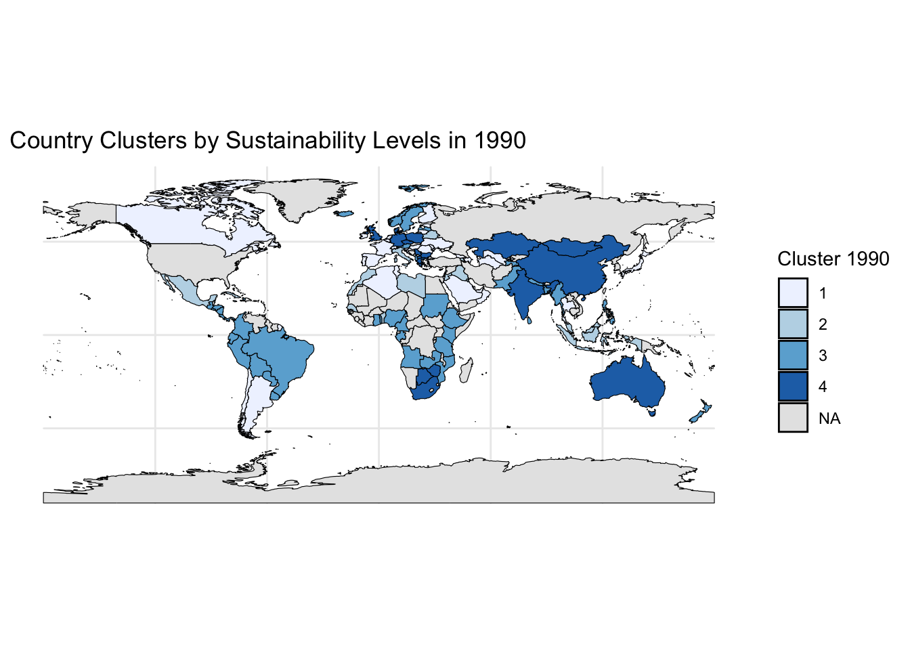
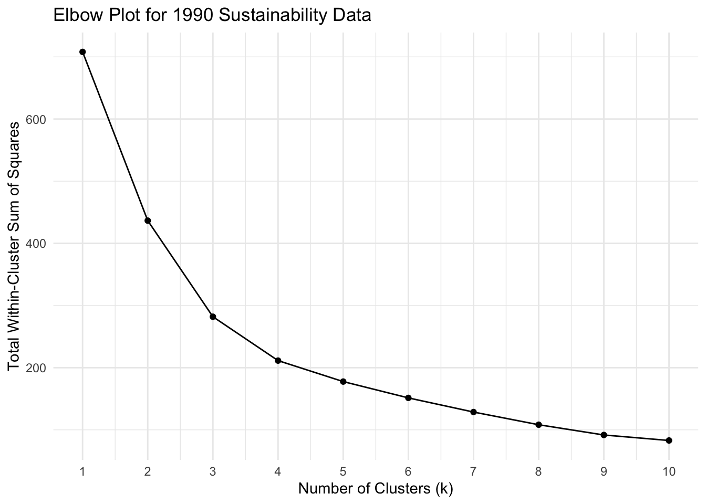
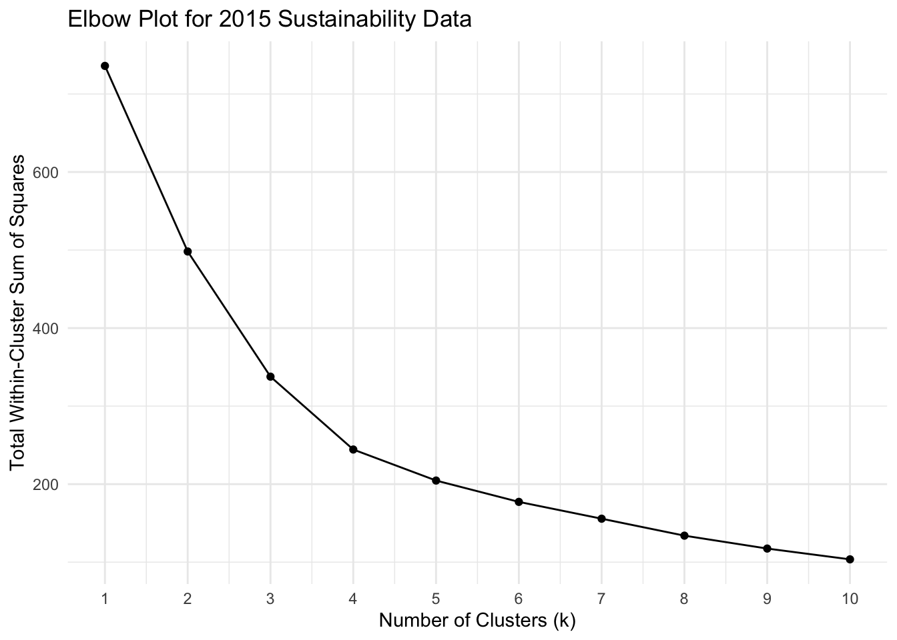

Analyzing Sustainability Indicators Amidst Climate Change
Optional subtitle
Abstract
A brief abstract summarizing your project is required here. This abstract, along with the first image or figure in your blog, will be used as a preview to your blog on the course’s landing page for all the blogs.
Getting started
Climate change and sustainable development have become the topics of debate in recent years. Countries use different policies to identify and target respective ecological challenges. It is important to admit that geographical location, development level and reliance on resources have different effects on green transition efforts. In this blog we will explore how countries’ sustainability levels have changed since 1990, what regions share ecological indicators, and what policies are key to improve the environment in these places.
Contents of the page
Introduction and context
Over the past 30 years, the world has seen significant environmental changes. The effects of those changes can have drastic implications on humans, animals, and nature as a whole. To mitigate those changes, many different policies have been carried out. In this blog, we’ll plot the map representing the change of CO2 over the years. We will explore the countries that have shown the greater CO2 change, which countries were able to tackle the CO2 increase, and have only shown a slight increase. Furthermore, we will present the changes in other environmental factors and sustainable energy usage across the continents over the years. These variables, coupled with clustering based on sustainability and logistic regression, will help us to discuss the changes that have taken place and provide future advice for policymakers on which variables they should focus on.
Research questions and motivation
- For policymakers to create efficient sustainability policies that mitigate climate change, it may be helpful to know which countries are performing on similar levels or exhibiting similar demographic trends and characteristics. Which countries perform similarly for key sustainability indicators, such as renewable energy consumption, electricity production from oil/coal, or renewable energy sources?
- Deforestation and massive population growth are two examples of major problems contributing to climate change, yet they disproportionately affect some countries. To what degree do certain sustainability indicators impact countries differently?
- Considering data from at least two periods, how likely is a country to advance to a more sustainable cluster based on its indicator values?
Changes in CO2 emissions
The map above shows the percentage change in CO2 emissions from 1990 to 2022. On the one side, we can see an interesting pattern: many European and North American countries reduced their emissions successfully, and their success is often attributed to policy reforms on renewable energy, the zero carbon emissions project, and energy efficiency. On the other hand, many nations in Southeast Asia have experienced significant increases in CO2 concentrations, with some countries experiencing over a 100% increase from 1990. This rapid increase in CO2 is often attributed to rapid industrialization, population growth, continued reliance on fossil fuels, and a lack of sustainable energy production
These rising emissions have profound implications for both humans and life on Earth. Elevated CO2 levels contribute to human health issues and can cause asthma, other respiratory conditions, and general effects on the brain, like dizziness. Moreover, the raised CO2 levels cause the greenhouse effect, which can aggravate the planet’s climate change. The rapid change in climate can further threaten human infrastructure and disrupt access to healthcare services. Climate.gov
In the next part of the blog, we will discuss more about sustainability factors and how they affect the environment.
Yearly data by environmental indicators
Sustainability and the state of the environment are influenced by a number of factors and can impact the development of the country. While it is difficult to capture the effect of every variable on the state of the environment, we decided to select those that cover both causes and consequences of natural disasters, including energy consumption, renewable energy production, forest area, population growth rates, and CO2 emissions. For instance, forests cover roughly a third of all the land on earth. This dashboard allows to observe the effects of these indicators on individual countries and continents across the period from 1990 to 2020, but the main insights will be discussed below.
Deforestation
According to the United Nations, 10 million hectares of land experience deforestation annually, which is when humans convert wooded land into something different by clearing dense forests. Deforestation and forest degradation are destroying natural ecosystems, fragment wildlife habitats, and contribute to global carbon emissions. Based on the line graph provided below, Oceania and Americas have the highest percentage of forest area, while Asia is among the lowest. While Europe, Oceania, and Asia have experienced approximately a 5% increase in forest area, both Americas and Asia had a 5% decline.

Renewable energy consumption and output
Today’s global energy crisis has highlighted the urgency for using renewable energy sources. They are replenished at the higher level than are consumed. For example, solar energy and wind are among them. The rate at which solar energy is taken by the Earth is about 10,000 times greater than the rate at which people consume such energy. Wind energy uses the kinetic energy of moving air by using large turbines located on land or in sea- or freshwater. Taller turbines and larger motor diameters that were developed in recent decades allow for maximization of electricity produced.
:quality(90)/p7i.vogel.de/wcms/ed/d8/edd83d7b6f7038c7c15a46fdf2bc6fb7/96879394.jpeg)
Among other sources of renewable energy are geothermal energy, which uses heat from geothermal reservoirs using wells or other means. Hydropower collects the energy of water moving from higher to lower elevations, usually from reservoirs and rivers. Ocean waves or currents can be used to produce electricity and heat from the ocean or seawater. Bioenergy is used for heat and power production, agricultural crops for liquid biofuels and consists of variety of organic materials, called biomass, that include wood, charcoal, dung and other manures. In rural areas, biomass is a popular source of energy for cooking, lighting and space heating, especially among poorer populations in developing countries.
Energy consumption and production plots reveal a clear increasing trend for renewable energy output in regions, such as Oceania by 10%, Asia by 7%, and Europe by more than 20%. Africa and Americas experienced fluctuations in renewable energy output across the priod of 25 years, but were among leaders in the quantity of renewables along with Europe. The plot of renewable energy consumption reveals that Africa is an exceptional case. While other continents’ renewable energy consumption levels range between 5 and 22%, Africa reached a 70% mark. In fact, Africa has an abundance of solar, wind, geothermal and bioenergy resources. While renewable sources account for nearly 22% of the electricity output, consumption of renewable energy is so high because it remains one of the least electrified regions. Maybe Africa’s renewable potential be a game changer to overcome energy poverty and generate development on the continent.

Electricity production from oil and coal sources
Coal, crude oil, and natural gas are fossil fuels because they were formed from the fossilized plants and animals that lived millions of years ago and have a high carbon content. They were the main sources of energy used to power our houses, cars, and businesses for more than a century. Fossil fuels still play a crucial role in our lives as they account for the major part in electricity production. However, fossil fuels take their toll on ecosystems, air quality, and landscapes. Processing, unearthing, and extracting underground deposits lead to land degradation and make it impossible to restore once nutrient-rich soil. Toxic runoff into water streams resulting from fossil fuel extraction jeopardizes water ecosystems and makes it unsafe for drinking. Additionally, burning fossil fuels leads to air pollution, which can have severe impacts on physical health, global warming, and ocean acidification.

According to data in the plots below, Oceania is heavily reliable on fossil fuels with around 60% of total electricity output coming from coal in 2015, but it shows a decreasing trend in the span of 25 years. Europe is the second largest user of coal power with about 18% of total energy output coming from it. It shows a decreasing trend as well. Americas, on the ther hand, are the largest consumers of oil energy which accounts for around 20% of total energy output. The rest of the continents have under 10% of electrivity coming from oil. Notably, while there are significant fluctuations in oil usage from year to year in all of the continents, Asia shows a clear decreasing trend in oil energy consumption.

Clustering by sustainability levels
We clustered the data between 1990 and 2015 to determine country’s sustainability by 4 clusters and using the following variables:
-Renewable energy consumption (% of total final energy consumption)
-Renewable electricity output (% of total electricity output)
-Electricity production from oil sources (% of total)
-Electricity production from coal sources (% of total)
(See appendix to see why we’ve chose k=4 for clustering).
After the process of standardizing indicators and k-means clustering for the years 1990 and 2015 was complete, the table we created allowed us to take a glimpse at the changes in cluster group assignments for the first 10 countries and regions in this newly formed dataset. At first glance, you can see the region of ‘Africa Eastern and Southern’ changed groups from 3 to 4, while the country of Argentina moved from 4 to 3.
# A tibble: 178 × 3
`Country Name` cluster_1990 cluster_2015
<chr> <fct> <fct>
1 Africa Eastern and Southern 4 4
2 Africa Western and Central 3 2
3 Angola 3 2
4 Albania 3 2
5 Arab World 1 3
6 United Arab Emirates 1 3
7 Argentina 1 3
8 Armenia 2 3
9 Australia 4 4
10 Austria 3 2
# ℹ 168 more rowsNext, the goal was to visualize the distribution of values for each cluster group in order to distinguish each group’s unique characteristics using a scatterplot matrix. There are two matrices to represent the cluster groups for two different periods. By knowing each cluster’s special characteristics, we are able to identify which groups are most sustainable and the least sustainable.
In 1990:
- Cluster 1 (red)
- Characterized by high oil-based electricity production, but very low renewable energy consumption and renewable electricity output.
- Least sustainable: It likely represents countries heavily reliant on fossil fuels with minimal use of renewables.
- Characterized by high oil-based electricity production, but very low renewable energy consumption and renewable electricity output.
- Cluster 2 (green)
- Higher levels of renewable energy consumption and electricity output, with low oil and coal electricity production.
- Most sustainable: Likely represents countries investing in renewables with limited reliance on fossil fuels.
- Higher levels of renewable energy consumption and electricity output, with low oil and coal electricity production.
- Cluster 3 (blue)
- Relatively high coal-based electricity production, with moderate renewable energy consumption.
- Second most sustainable: Notably high coal usage, but more renewables than Cluster 1.
- Relatively high coal-based electricity production, with moderate renewable energy consumption.
- Cluster 4 (purple)
- Low to moderate values across all four indicators. Moderate coal usage but low in renewable energy usage.
- Third most sustainable: Not a standout in fossil fuel or renewable use.
- Low to moderate values across all four indicators. Moderate coal usage but low in renewable energy usage.
Ranking from most to least sustainable: 2, 3, 4, 1
In 2015:
- Cluster 1 (red)
- Remains the least sustainable, although with some improvement in renewable energy consumption.
- Cluster 2 (green)
- Remains the most sustainable. Clear leader in sustainability metrics.
- Cluster 3 (blue)
- Reduced reliance on coal production, slight increase in renewables.
- Still in second place in sustainability ranking.
- Reduced reliance on coal production, slight increase in renewables.
- Cluster 4 (purple)
- Increased coal production, surpassing Cluster 3. Moderate renewable energy, low oil usage.
- Still in third place in sustainability ranking.
- Increased coal production, surpassing Cluster 3. Moderate renewable energy, low oil usage.


Assessing the odds of environmental transition
Logistic Regression
Call:
glm(formula = cluster_jump ~ renewable_energy + electricty_oil +
renewable_electricity + electricity_coal, family = binomial(),
data = cluster_comparison)
Coefficients:
Estimate Std. Error z value Pr(>|z|)
(Intercept) -0.42398 0.21864 -1.939 0.052487 .
renewable_energy -0.04528 0.01821 -2.487 0.012887 *
electricty_oil 0.05191 0.01530 3.393 0.000691 ***
renewable_electricity -0.03933 0.01716 -2.291 0.021959 *
electricity_coal -0.06986 0.02000 -3.493 0.000478 ***
---
Signif. codes: 0 '***' 0.001 '**' 0.01 '*' 0.05 '.' 0.1 ' ' 1
(Dispersion parameter for binomial family taken to be 1)
Null deviance: 245.66 on 177 degrees of freedom
Residual deviance: 189.49 on 173 degrees of freedom
AIC: 199.49
Number of Fisher Scoring iterations: 5Results and discussion
Appendix
K-means Clustering: The elbow plots below were used to determine the optimal number of cluster groups (k) for countries based on their sustainability levels. Not all seven sustainability indicators were considered in the k-means clustering model because the goal was to prioritize the sustainability indicators that signal robust economic activity and is thus prone to annual fluctuations, such as renewable energy consumption, renewable electricity output, as well as electricity production from oil and coal sources. We determined that 4 cluster groups was the optimal amount to proceed with our analysis.


Methods
Throughout the blog, we employed data visualization, clustering, and predictive modeling to analyze sustainability patterns across countries. We began with map which showed the trend in CO2 emissions of each country. We also included line graphs for different sustainbability and nature related variables trends over time.
To identify groups of countries with similar sustainability profiles, we used k-means clustering on standardized indicators such as renewable energy consumption and electricity production from coal and oil. We applied the elbow method to determine the optimal number of clusters, selecting k = 4 based on the elbow plot. This helped us segment countries into more and less sustainable groups and track their transitions over time.
Finally, we used a logistic regression model to predict whether a country will jump from one cluster to another. By comparing cluster assignments between 1990 and 2015, we analyzed the role of sustainability factors in driving these transitions. In addition, we applied a random forest classifier to identify the key drivers of sustainability improvement. Furthermore, we trained the model to predict the cluster a country is likely to belong to in the future. The model achieved a prediction accuracy of approximately 86%.
Bibliography
Additional information used:
- Methane Alert and Response System (MARS) - A global initiative led by UNEP to detect and address major methane leaks in near real-time.
- The Emissions Gap Report 2024 - Annual report analyzing the gap between current climate pledges and the emissions reductions needed to meet global climate targets.
- How Halting Deforestation Helps Fight Climate Change - UNEP article exploring the role of forest conservation in mitigating the climate crisis.
- Solar Energy’s Climate Impact: IPCC Report - Assessment of solar energy’s potential to reduce emissions, stating its impact can be 10,000 times more beneficial than fossil fuels.
Helpful Resources: